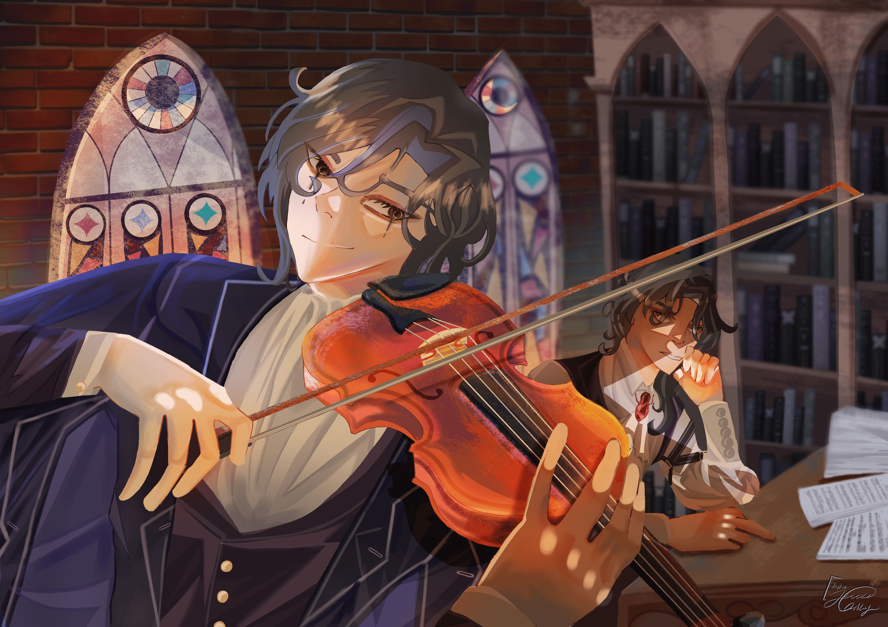
Ilustrasi digital "The Stranger" bermain violin dengan sempurna, sementara Gordey hanya bisa menatap dengan penuh iri. Ilustrasi menggunakan IbispaintX. Proses pembuatan selama 15 jam dengan teknik render campuran cell shading.
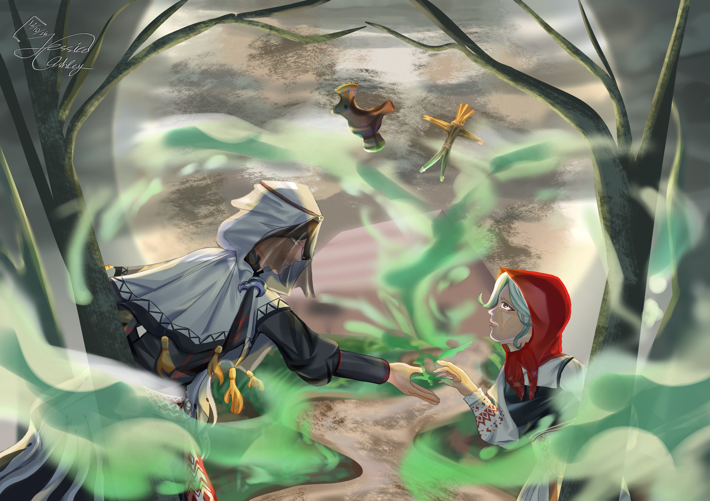
Ilustrasi digital Dragan yang menyegel perjanjian antara kehidupan dan kematian bersama dengan nenek tua, yang hanya menginginkan kedamaian dalam hatinya. Ilustrasi menggunakan IbispaintX. Proses pembuatan selama 10 jam dengan teknik render campuran cell shading.
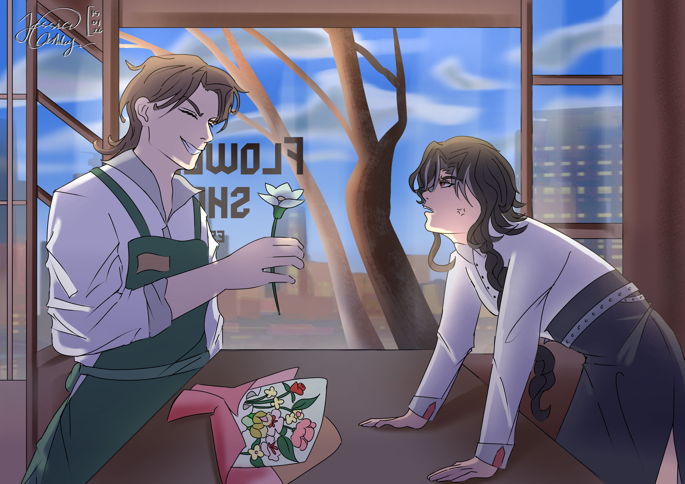
Ilustrasi digital Veselina yang hanya bisa mengomel saat Sasha membuatkan bouquet bunga untuk Veselina yang ingin putus dengan pacarnya. Ilustrasi menggunakan IbispaintX. Proses pembuatan selama 4 jam dengan teknik render campuran cell shading.
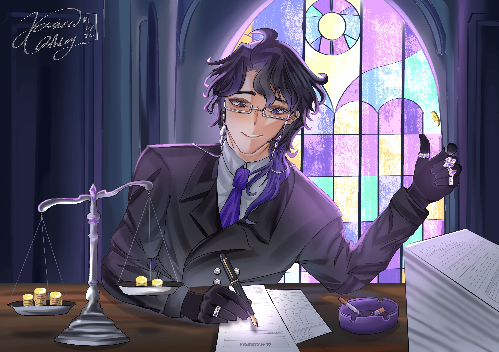
Ilustrasi digital kekejaman kapitalis yang dilakukan Fedya, tak memerdulikan kesejahteraan rakyat Volovny. Ilustrasi menggunakan IbisPaintX. Proses pembuatan selama 9 jam dengan teknik render campuran cell shading.
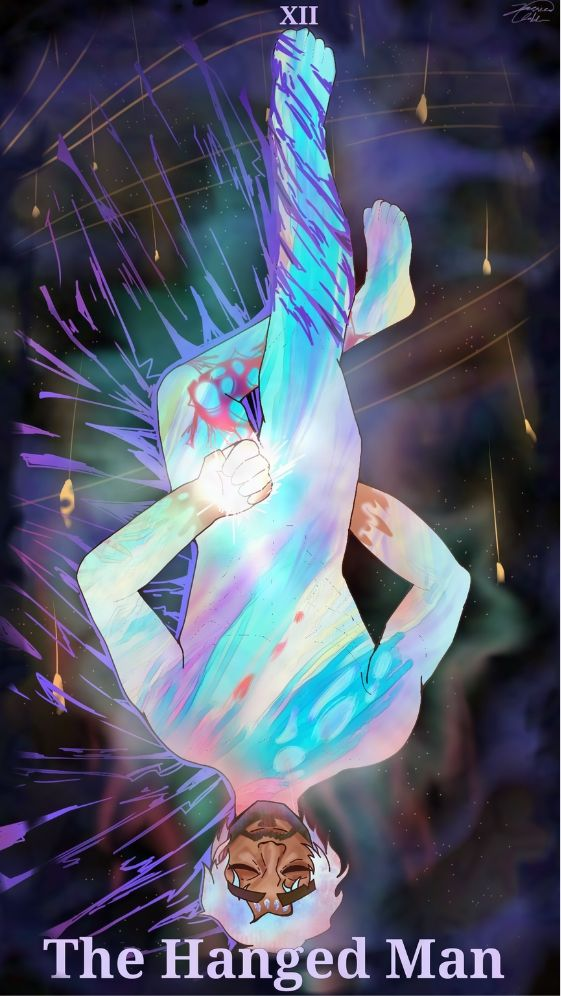
Ilustrasi digital menggambarkan salah satu kartu tarot ke-12 "The Hanged Man". Kartu tarot menggunakan karakter Jayce Talis dari serial animasi Arcane, khususnya pada Season 2. Ilustrasi menggunakan IbisPaintX. Adapun teknik render yang digunakan meniru cara rendering Arcane yang condong seperti lukisan kasar dengan warna campuran yang indah.
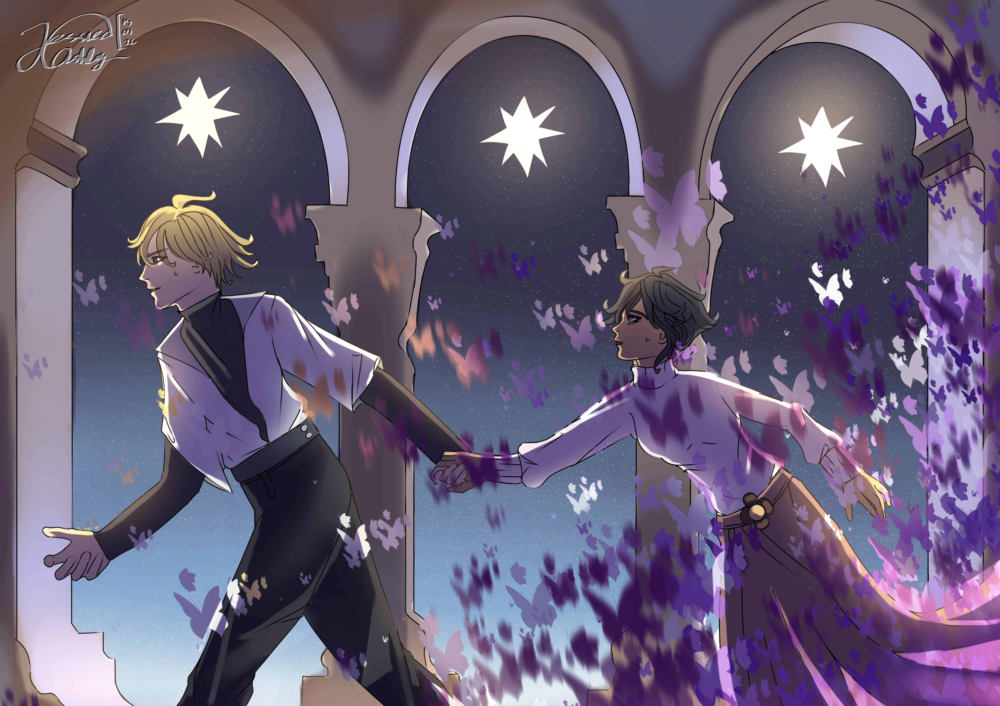
Ilustrasi digital kesempatan terakhir Konstantin dan Katarina yang terjebak dalam loop waktu yang menghantui mereka selalu. Ilustrasi menggunakan IbisPaintX. Proses pembuatan selama 4 jam dengan teknik render campuran cell shading.
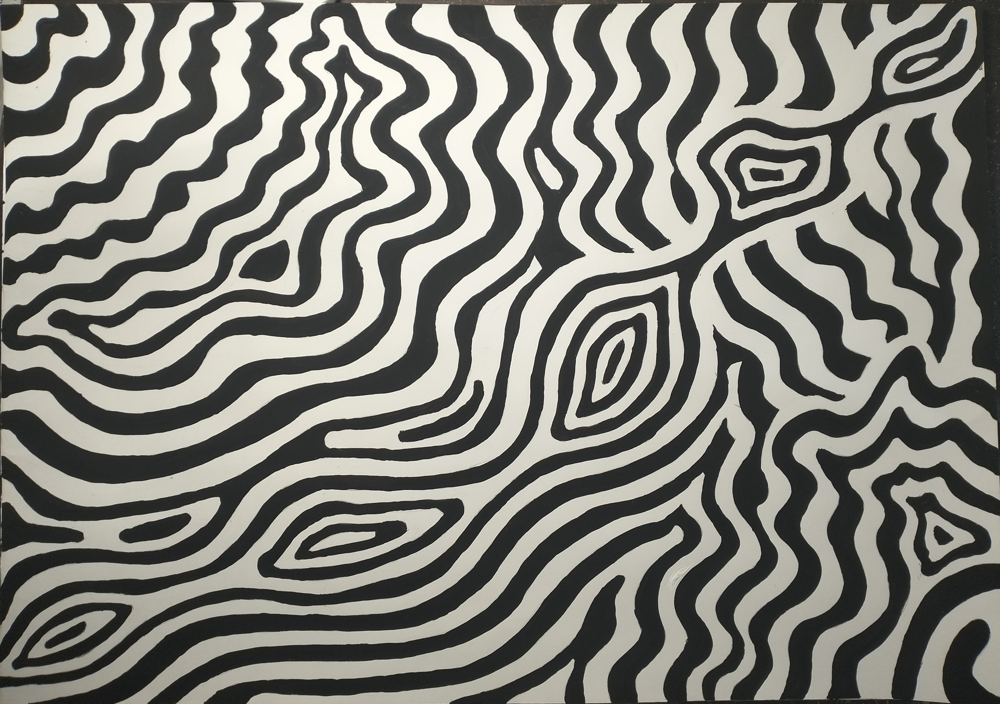
Gambar tradisional berupa nirmana garis 2D. Nirmana sendiri tidak memiliki makna, namun disusun sedemikian rupa sehingga memiliki nilai keindahan yang harmonis. Garis nirmana dibuat dengan cat akrilik hitam AGA.
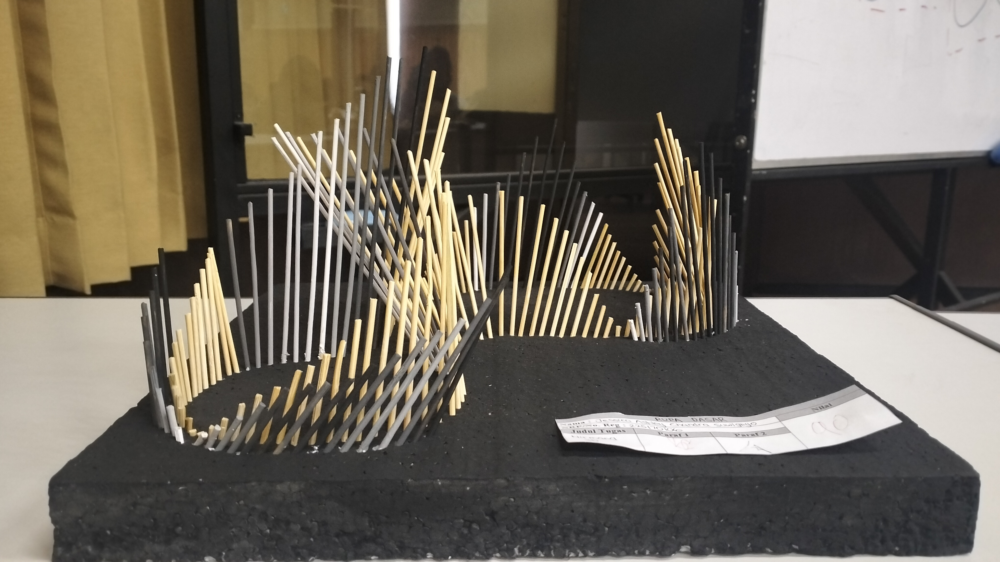
Karya nirmana 3D yang disusun dengan cara membuat rangkaian banyak tusuk sate di atas balok gabus sebesar 30 cm x 30 cm, dengan ketinggian serta warna tusuk sate yang berbeda-beda. Disusun supaya membentuk nirmana dengan pola yang indah untuk dilihat dari berbagai arah.
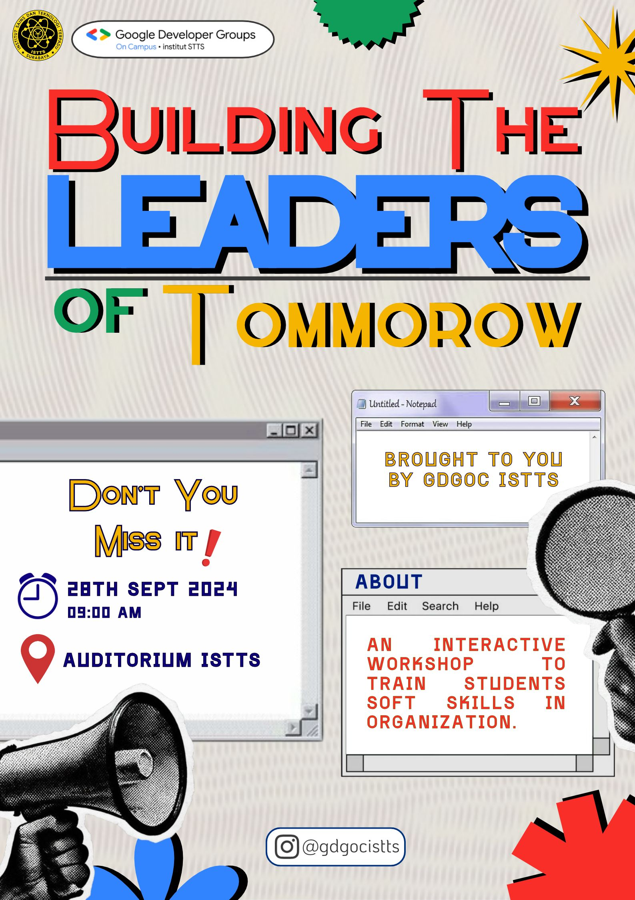
Poster digital GDGoC yang mengangkat event "Building the Leaders of Tommorow". Poster menggunakan skema warna GDGoC merah-kuning-biru-hijau (warna Google) dan dibuat menggunakan Canva.
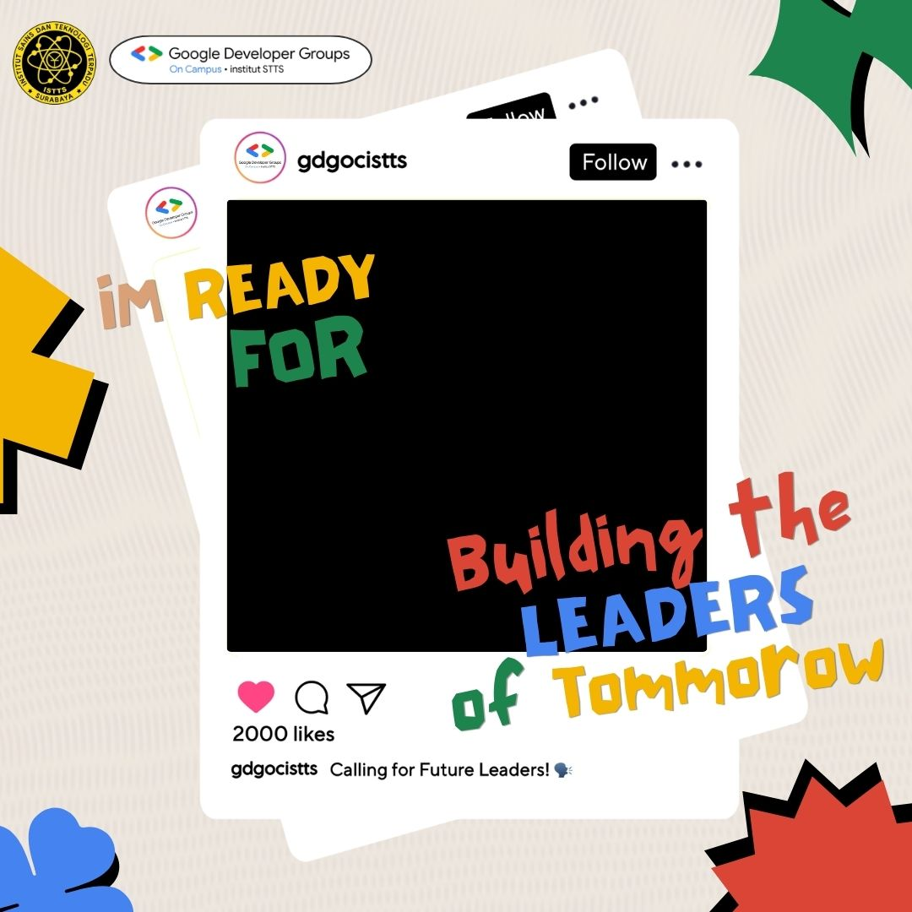
Template twibbon digital yang bisa digunakan yang mengangkat event "Building the Leaders of Tommorow". Twibbon menggunakan skema warna GDGoC merah-kuning-biru-hijau (warna Google) dan dibuat menggunakan Canva.
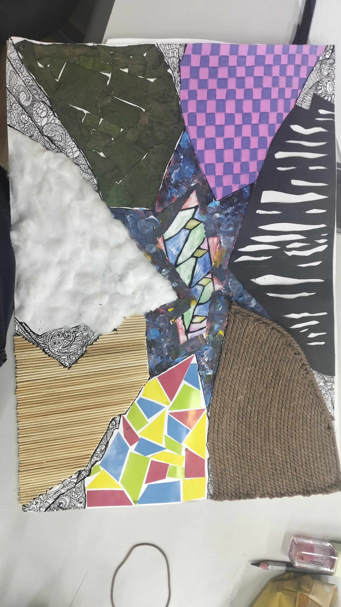
Karya berukuran kertas gambar yang memanfaatkan berbagai macam texture alami maupun buatan yang disusun untuk menjadi kesatuan karya. Adapun texture yang digunakan adalah texture daun, kapas, tali goni, tusuk sate, kertas origami, kertas buffalo hitam, plastik yang diwarnai menyerupai stained glass, cat akrilik, serta spidol pink-ungu.
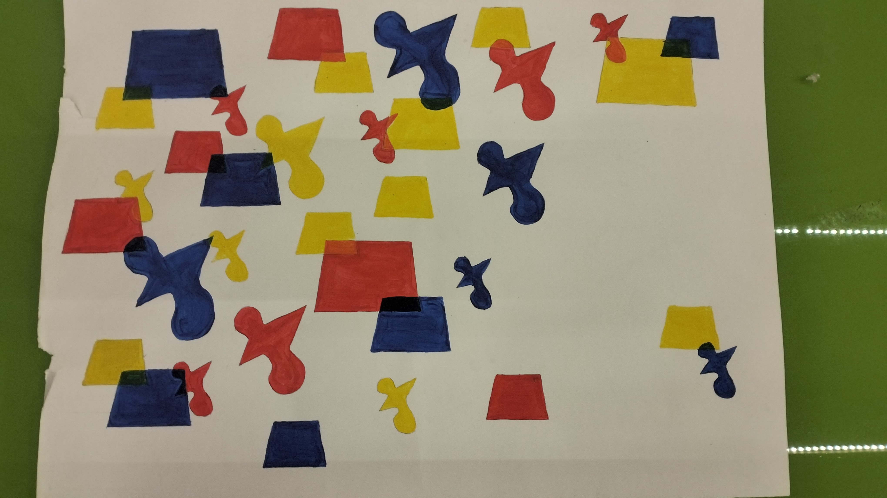
Karya datar yang disusun dengan menggunakan beberapa bangun geometri dasar dan non-geometri, yang kemudian diberi warna merah-kuning-biru. Bentuk bisa ditumpuk dan dikomposisikan agar membentuk karya yang seimbang.
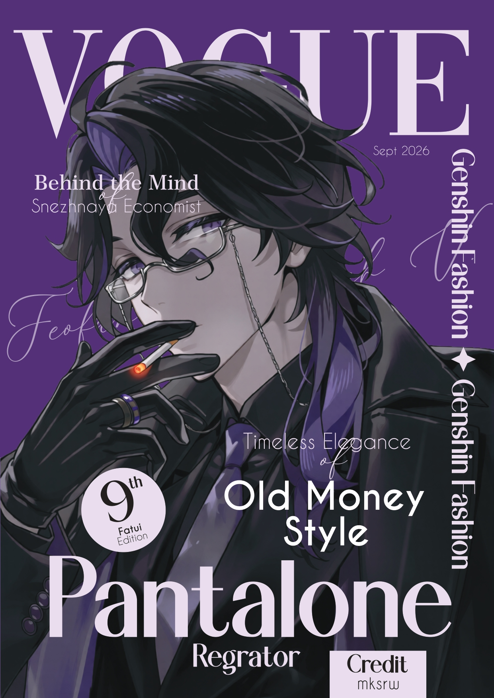
Cover majalah fiktif digital menggunakan penampilan majalah "Vogue" dengan karakter game Genshin Impact "Pantalone" sebagai wajah utama dengan skema warna dominan ungu. Cover dibuat menggunakan Adobe Illustrator.
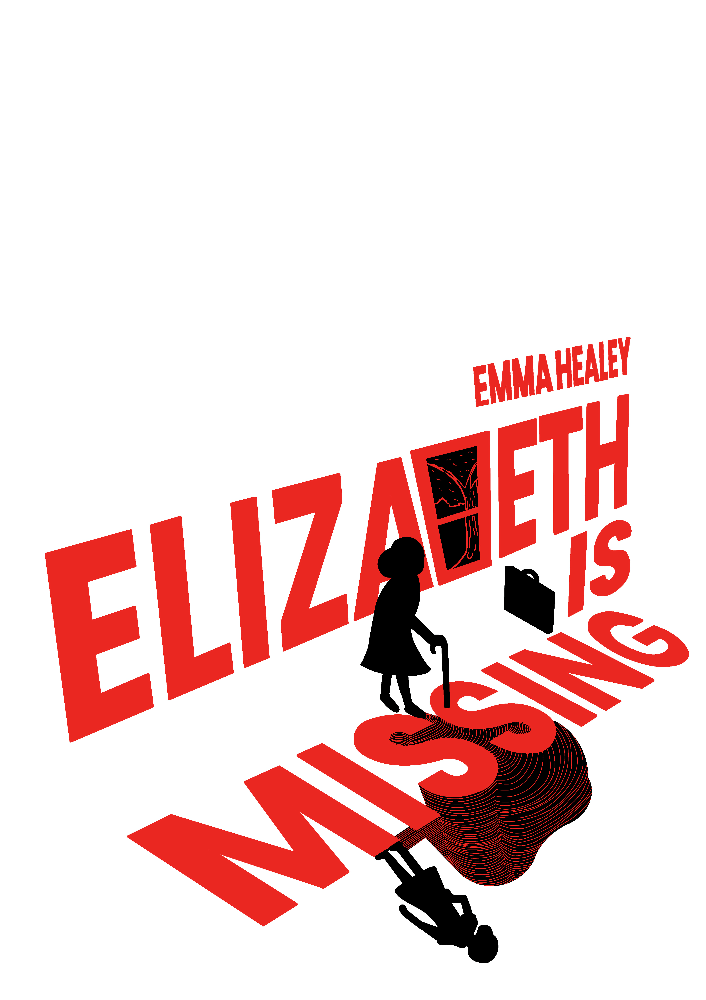
Alternatif cover buku novel "Elizabeth is Missing" karangan Emma Healey menggunakan permainan tipografi dan sedikit ilustrasi untuk menggambarkan keseluruhan isi cerita novel. Cover buku dibuat menggunakan IbisPaintX.
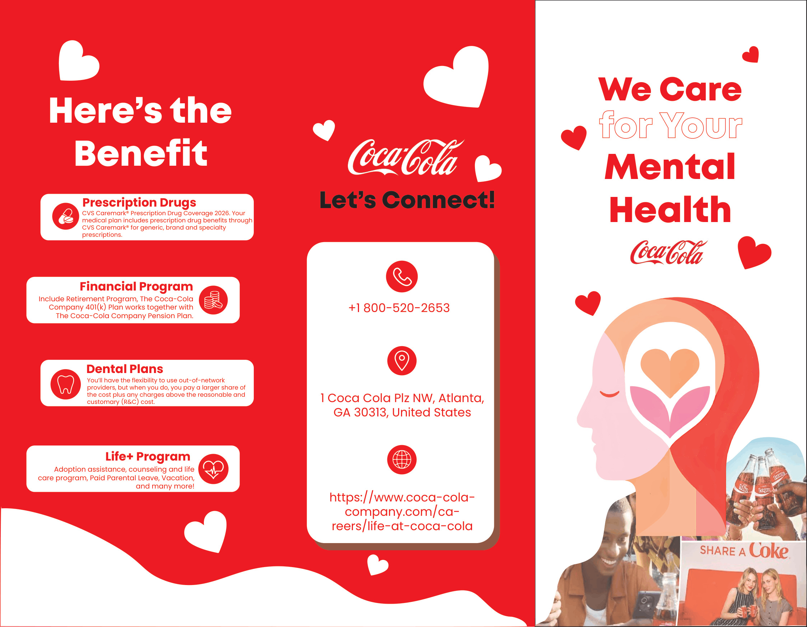
Brosur Coca-Cola yang didominasi dengan skema warna merah-putih. Mengankat tema "Mental Health", brosur ini menawarkan berbagai macam layanan untuk pegawainya dalam rangka menjaga kesehatan mental bersama. Brosur dibuat menggunakan Adobe Illustrator.
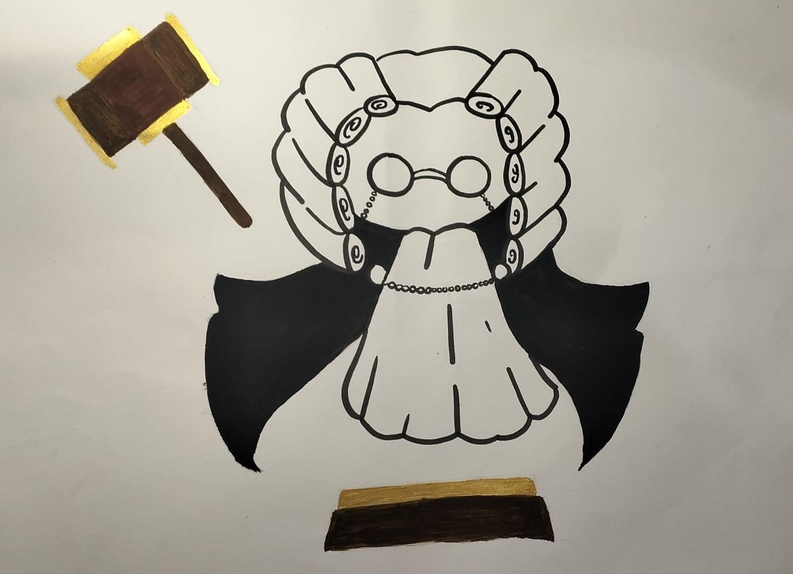
Gambar tradisional untuk menggambarkan profesi jaksa dalam bentuk ikon sederhana. Gambar diwarnai menggunakan cat akrilik.